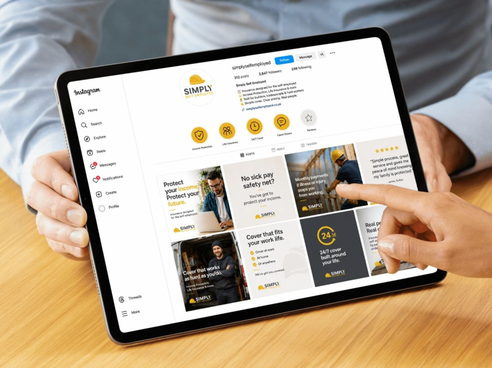
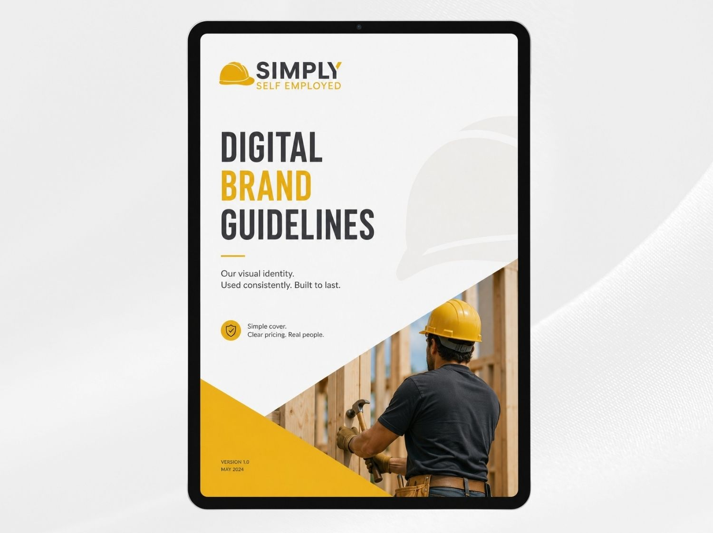

Case Study
Simply Self Employed
Helping an insurance brand reach self-employed workers with clearer messaging, stronger lead generation and a more joined-up digital marketing approach.

Simply Self Employed provides income protection and life insurance for people who work for themselves. The offer is simple but important: if illness or injury stops someone from working, they can still have money coming in each month to help cover bills, mortgage payments, rent and day-to-day costs.
The brief
The aim was to create a clearer digital presence for Simply Self Employed and support that website with campaigns that could generate enquiries from self-employed people looking for financial protection.
The messaging needed to make the value of income protection easy to understand, especially for people who do not receive Statutory Sick Pay and could quickly feel the pressure if they were unable to work.

How we helped
We supported Simply Self Employed across the core parts of its digital marketing setup, from the website itself through to paid campaigns and organic social activity. The focus was on making the offer feel clear, trustworthy and relevant to people who are responsible for their own income.
Paid social and Google PPC activity were used to reach people actively considering cover, while organic posts helped reinforce the message around income protection, life insurance and the risks self-employed workers face when they do not have employer sick pay to fall back on.
- Website support and content structure
- Meta ads campaign setup and management
- Google PPC activity focused on lead generation
- Organic social posts to build awareness and trust
- Messaging around income protection for self-employed workers



The outcome
The project gave Simply Self Employed a stronger foundation for generating enquiries online, with a clearer website, more focused campaign messaging and a digital marketing setup built around lead generation.
By keeping the message direct, practical and easy to understand, the activity helped connect the brand with self-employed people who may not have realised how exposed they could be if sickness or injury stopped them earning.
“The focus was on turning an important insurance product into a clear, practical message that self-employed people could understand quickly and act on.”
Piechart Digital
More work like this
Other projects from the portfolio.
Need support?
Need help with your digital marketing?
If your brand needs ads that perform, stronger creative or a website that works harder, get in touch with us.